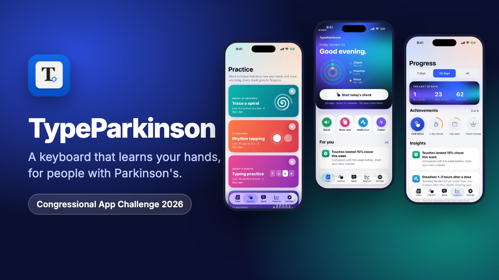

iOS · 2026
TypeParkinson
An iPhone and iPad app plus a system keyboard. It measures where someone's touches actually land, builds a keyboard around that, and keeps adjusting as they type. It also has short daily hand and voice check-ins, medication timing, and a report to share with a care team.
Built with Pranav Atreya for the Congressional App Challenge. The tricky part was the machine learning: it has to adapt to each person's hands without ever pretending to diagnose anything.